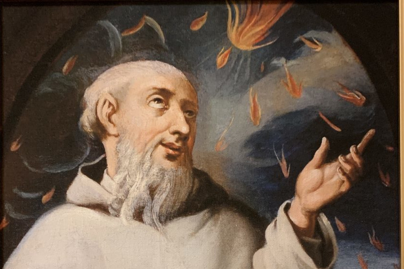

Modlitwa o powołania (12:20)
P. Módlmy się o nowe powołania brackie i kapłańskie, szczególnie do paulińskiego Zakonu, a także za wszystkich Ojców i Braci Paulinów.
S. W imię Ojca i Syna i Ducha Świętego.
Podanie tajemnicy Różańca św.
Ojcze nasz…
Zdrowaś Maryjo (10x)
Chwała Ojcu…
O mój Jezu…
Pod Twoją obronę…
P. Pod Twoją obronę…
S. uciekamy się, święta Boża Rodzicielko, naszymi prośbami racz nie gardzić w potrzebach naszych, ale od wszelakich złych przygód racz nas zawsze wybawiać, Panno chwalebna i błogosławiona. O Pani nasza, Orędowniczko nasza, Pośredniczko nasza, Pocieszycielko nasza. Z Synem swoim nas pojednaj, Synowi swojemu nas polecaj, swojemu Synowi nas oddawaj. Amen.
Modlitwa świętego Bernarda
P. Pomnij, o Najświętsza Panno Maryjo…
S. że nigdy nie słyszano, abyś opuściła tego, kto się do Ciebie ucieka, Twej pomocy wzywa, Ciebie o przyczynę prosi. Tą ufnością ożywiony, do Ciebie, o Panno nad pannami i Matko, biegnę, do Ciebie przychodzę, przed Tobą jako grzesznik płaczący staję. O Matko Słowa, racz nie gardzić słowami moimi, ale usłysz je łaskawie i wysłuchaj.
Modlitwa za wstawiennictwem bł. Euzebiusza
P. Módlmy się. Wszechmogący Boże, błagamy Cię przez miłość bł. Euzebiusza do Krzyża Chrystusowego i synowską cześć do Bożej Rodzicielki, obdarz zakon pauliński darem nowych świętych powołań brackich i kapłańskich. Umocnij miłością, wiarą i odwagą tych, którzy rozeznają w swych sercach głos Twego wezwania, błogosław i chroń braci postulantów, nowicjuszy i kleryków. Przez Chrystusa Pana naszego.
S. Amen. [1]

Bibliografia
- https://www.radiojasnagora.pl/md9-modlitwa-o-powolania [dostęp 2026-02-28.]
- https://www.ekai.pl/dzis-swieto-bl-euzebiusza-z-ostrzyhomia-zalozyciela-zakonu-paulinow/ [dostęp 2026-02-28.]
- https://upload.wikimedia.org/wikipedia/commons/0/09/Jasna_G%C3%B3ra_Kaplica_%C5%9Aw._Paw%C5%82a_Pustelnika.JPG [dostęp 2026-02-28.]